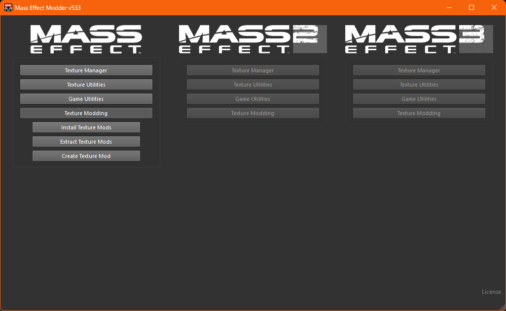

Time To Finish This
Welcome to the last stop on our night out together!
Let's finish strong and freshen up the visuals a bit.
One Final Warning
LE1
For texture modding we want the bare .mem files, so after you download these mods open and extract them to somwhere easy to access.
A choice stands before you. Two popular texture mods dominate the scene: LEUITM and Primitives.
Each pursues a different goal. LEUITM aims to bring characters more in line with their LE3 appearance, while Primitives tells a visual story by gradually aging both humans and asari as the trilogy gets darker.
Personally, I prefer LEUITM and recommend it if you want the simplest setup with the broadest coverage.
If both appeal to you, however, then look towards the "I Want Both" section below which will explain how to combine both mods.
WrexVanillaStyleLEUITM.mem or WrexBattleHardenedLEUITM.mem.AsariLE1DPCompatLEUITM.mem from the three Asari options.
Liara.Players who have been using my mod batch file can skip:
AllianceUniformsLEUITM.mem, AndersonLEUITM.mem, HumanEyesLEUITM.mem (Preference), LiaraLEUITM.mem, LiaraLOTSBLEUITM.mem
I Want Both
LE2
For texture modding we want the bare .mem files, so after you download these mods open and extract them to somwhere easy to access.
A choice stands before you. Two popular texture mods dominate the scene: LEUITM2 and Primitives.
Each pursues a different goal. LEUITM2 aims to bring characters more in line with their LE3 appearance, while Primitives tells a visual story by gradually aging both humans and asari as the trilogy gets darker.
Personally, I prefer LEUITM2 and recommend it if you want the simplest setup with the broadest coverage.
If both appeal to you, however, then look towards the "I Want Both" section below which will explain how to combine both mods.
WrexLEUITM2.mem or WrexBattleHardenedLEUITM2.mem.Liara.Players who have been using my mod batch file can skip:
AllianceUniformsLEUITM2.mem, AndersonLEUITM2.mem, AriaLEUITM2.mem, CerberusUniformsLEUITM2.mem, Human_Eyes_LEUITM2.mem (Preference), LiaraArmorLEUITM2.mem, LiaraFaceLOTSBStyleLEUITM2.mem, LiaraFaceME1StyleStyleLEUITM2.mem, LiaraFaceOGTransitionLEUITM2.mem
I Want Both
LE3
For texture modding we want the bare .mem files, so after you download these mods open and extract them to somwhere easy to access.
Installation
Now that you have everything you need all that is left is the installation itself!
MEM (Mass Effect Modder)
Just like M3, the community has created its own dedicated tool for texture modding, simply called
Mass Effect Modder or MEM.
Thankfully, we can launch it directly from inside M3 this time.
Open M3 → navigate to Tools → select Mass Effect Modder from the dropdown. M3 will download and open the latest version automatically.
The Long Wait


The main window might look a bit overwhelming at first, but don’t worry, most of it doesn’t concern us.
In the column for the game you wish to mod, click on Texture Modding → Install Texture Mods.
MEM will give you one final warning that you can’t install any more content mods afterwards. Since you’ve been such a diligent reader you know this already and can confidently click OK.
Before adding your mods, a quick note about order: MEM installs texture mods in descending order, meaning that mods lower on the list will overwrite those above if they touch the same files.
For example, say you have two texture mods modifying hands: PrettyHands.mem and MagnificentGrabbers.mem. You add them one after another so that the second appears lower on the list. When you install them, nothing explodes (hopefully), but in-game you’ll see only the textures from Magnificent Grabbers.
In short: Order matters!
When ready, click Add to list and select your extracted .mem files. I recommend your lists to look something like this:


Once everything looks good, click Install all mods!
Now sit back and relax. Depending on your setup, this process might take up to an hour or more.
When it’s done, you’ll see a confirmation popup. Launch your game to ensure nothing’s melted or attached itself backwards.
The End
Congrats! You’ve successfully completed this guide, and your Mass Effect experience should now be pretty enhanced.
You can now safely close both MEM and M3-your textures are fully installed.
This also means our time together has come to an end for now. But don’t worry, I’ll be here whenever the urge for another galaxy-wide bar crawl strikes.
I hope this guide has been at least a little useful to you. If so, I’d love to hear your feedback on the Nexus page.
Thank you and good night, Commander.